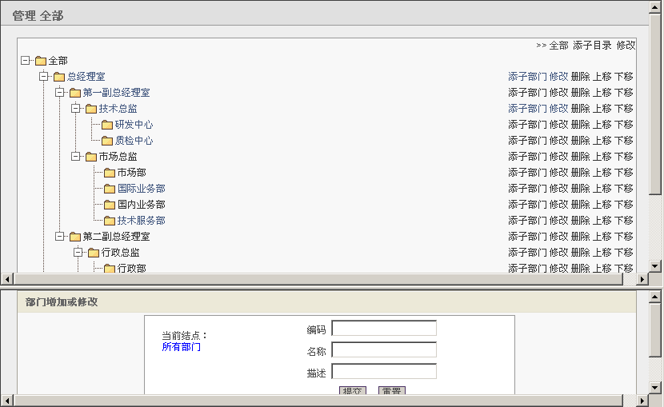
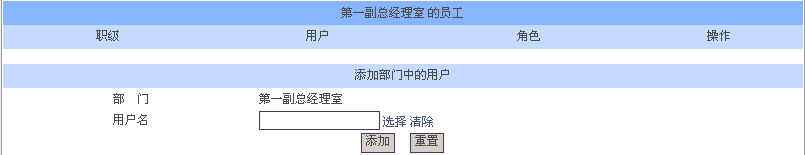

部门管理 |
| “组织机构”下的“部门管理”是对企事业单位的组织架构进行统一管理的模块。包括：新增部门、修改部门、删除部门，支持部门排序功能，支持系统缓存功能（可加快访问速度），用户可以很方便的添加部门员工。 下面是“部门管理”效果图。 |
|  |
| 1、新增部门。 （1）添加一级部门。点击“添子目录”然后在“部门添加或修改”处输入“编码”、“名称”、“描述”（注意：编号不能重复）。点击确定按钮即可添加一级部门。 （2）添加二级及二级以下部门。点击该部门的父部门后面的“添子部门”。如添加“第一副总经理室”只要点击“总经理室”后面的“添子部门”，在“部门添加或修改”处输入“编码”、“名称”、描述（注意：编号不能重复）。点击确定按钮即可添加子部门。 |
| 2、修改部门。点击要修改部门后面的“修改”，然后在“部门添加或修改”处修改“名称”、“描述”、“父结点”。点击确定按钮即可修改部门信息。 |
| 3、删除部门。点击要删除部门后面的“删除”，即可删除部门信息。 |
| 4、部门排序。选中要移动的部门，然后点击“上移”、“下移”就可以实现部门的重新排序。 |
| 5、添加部门员工。点击要添加员工的部门进入下图，选择“用户名”中的员工，点击“添加”即可添加该部门的员工。 |
|  |